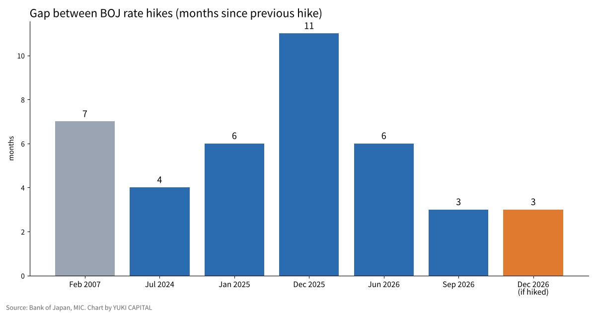
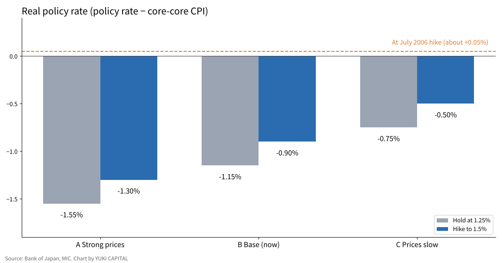

Will the Bank of Japan's 'agile rate hike' arrive in December? Testing BOJ board member Takata's call against 2006 and 2024–2026: hike intervals, inflation and the yen
On November 16, Bank of Japan board member Hajime Takata said in a speech in Tokushima that the BOJ should raise rates in an agile way, without being bound by a set interval or size.
At the October 30 policy meeting, Takata proposed raising the policy rate from 1.25% to 1.5%; the proposal was defeated 8 to 1.
The question of this article is whether the BOJ will raise the rate to 1.5% at its December meeting, or hold.

- The real policy rate (policy rate minus inflation) was about 0% when the BOJ hiked in July 2006; today it is about −1.2%, so there is more room to hike than in 2006.
- Since March 2024 the gap between hikes has shrunk from 11 months to 3; December, three months after September, fits that trend.
- The case for holding rests on Q3 GDP at −0.1% annualized and weak consumption; December will be a tug-of-war between these and a weak yen.
The question and background
The policy rate is the short-term rate the BOJ guides (the uncollateralized overnight call rate). The real policy rate is the policy rate minus inflation; this article uses consumer prices excluding fresh food and energy (core-core CPI).
The neutral rate is the level that neither heats nor cools the economy. BOJ staff estimates put the real neutral rate (the natural rate of interest) in a wide range of about −1.0% to +0.5% [8]. If inflation settles at 2%, that implies a nominal range of 1.0% to 2.5%.
The BOJ ended negative rates in March 2024, then raised the rate to 0.25% in July 2024, 0.5% in January 2025, 0.75% in December 2025, 1.0% in June 2026 and 1.25% in September 2026 [1]. On October 30 it held at 1.25%, with Takata the only dissenter [1].
The comparison is 2006. The BOJ ended quantitative easing in March 2006, ended the zero-rate policy on July 14 by moving to 0.25%, and raised to 0.5% in February 2007 [6]. It was Japan's first series of hikes after deflation, a starting point similar to today.
Data and method
Four kinds of numbers are used: dates and sizes of rate changes from BOJ statements [1][6], prices from the Ministry of Internal Affairs' consumer price index [3][7], the economy from the Cabinet Office's GDP release [4], and the yen from Ministry of Finance intervention records [5] and market closing rates.
There are two methods. First, line up the intervals between hikes (months since the previous hike) to see how fast this cycle is moving. Second, compare the real policy rate in the month of each hike to see how much room is left.
Hike probabilities implied by market rates (overnight index swaps) move a lot day to day and differ by source. This article does not use them as the basis for its answer; it sets the direction using only published price, growth and currency data.
For 2006, inflation figures after the August 2006 base-year revision are used. After the revision, CPI excluding fresh food rose 0.2% in July [7]. For today, the September 2026 figure of 2.4% for CPI excluding fresh food and energy is used [3].
Market views were also checked. Daiwa Institute of Research expects the BOJ to raise to 1.5% in December and 1.75% in March 2027, then pause [9]; if inflation overshoots, 2.0% in June 2027 is possible [9]. This article does not treat that forecast as the answer, but tests whether the numbers lead to the same place.
Results
In 2006–2007 the gap between hikes was 7 months. Since March 2024 the gaps have been 4, 6, 11, 6 and 3 months, the latest being the shortest. A December hike would repeat a 3-month gap.

December also has a precedent. The BOJ raised from 0.5% to 0.75% at its December 2025 meeting [1], deciding a hike at a meeting without an Outlook Report. A December hike would add the same 0.25% in the same month a year later.
The real policy rate at the July 2006 hike was 0.25% − 0.2%, about +0.05%, and about 0% in February 2007. Today it is 1.25% − 2.4%, about −1.15%. Even at 1.5% in December it would be about −0.9%, still negative.
| Jul 2006 | Feb 2007 | Sep 2026 | Dec 2026 (if hiked) | |
|---|---|---|---|---|
| Policy rate | 0.25% | 0.5% | 1.25% | 1.5% |
| Inflation (y/y) | 0.2% (core) | about 0.0% (core) | 2.4% (core-core) | assume 2.4% |
| Real policy rate | about +0.05% | about 0% | about −1.15% | about −0.9% |
| Gap since last hike | — (first) | 7 months | 3 months | 3 months |
| USD/JPY (approx.) | about 116 | about 120 | 157–158 | 159 (Nov 16) |
The economy is weak. The preliminary release on November 16 showed real GDP for July–September at −0.1% annualized, the first contraction in four quarters, with private consumption down 0.3% quarter on quarter for a second straight quarter [4]. Business investment rose 1.6%, and domestic demand as a whole was positive [4].
The yen is weak. USD/JPY touched 160.19 on November 13 and closed in New York at 159.36 on the 16th. The Ministry of Finance bought about ¥15.3 trillion of yen around 160 in 2024 [5], and the market sees 160 as a level the authorities watch.
Every hike in this cycle has been 0.25%; there has been no 0.5% move. Takata's 'not bound by size' leaves room to break that step, but the market assumes 0.25% for December.
Sensitivity analysis
December depends on how the price and growth data come in. Three cases were set for October–November inflation and the December 8 revised GDP, and the real policy rate and the direction of the decision were estimated.
| Case | Core-core CPI | GDP revision | Real rate if held at 1.25% | Real rate if hiked to 1.5% | Direction |
|---|---|---|---|---|---|
| A Strong prices | 2.8% | Revised up (positive) | about −1.55% | about −1.3% | Hike |
| B Base (now) | 2.4% | Stays at −0.1% | about −1.15% | about −0.9% | Lean hike |
| C Prices slow | 2.0% | Revised down (−0.5% or less) | about −0.75% | about −0.5% | Lean hold |

In all three cases the real policy rate stays negative even after a hike to 1.5%. The 2006 hikes happened with the real rate near 0%, so measured by prices there is more room this time. The case for holding stands only in C, where prices slow and GDP is revised down.
The yen assumption was moved too. If the yen weakens clearly past 160, Takata's argument about preventing an inflation overshoot strengthens and A and B lean further toward a hike. If it returns to the low 150s, the picture moves toward C.
Discussion
The opposing view is about growth. Hiking after two quarters of falling consumption would first raise the burden on mortgages and small-business loans. That eight members chose to hold in October is a weighty fact that the majority is still cautious [1].
Takata's point is second-round effects. Medium- to long-term inflation expectations have risen to 2% or more, wages and prices push each other up more easily, and the BOJ should show it will prevent an overshoot [2]. He also said attention is needed to inflation coming through the exchange rate [2].
There are three limits. First, estimates of the natural rate are wide and the neutral rate cannot be pinned down. Second, 2006 and today use different price measures (core vs core-core), so the yardstick is not strictly the same. Third, the bill cutting the consumption tax on food to 1% from April 2027 will temporarily lower fiscal 2027 inflation, and its effect on the December decision is hard to read.
The 2006 cycle has a lesson. The BOJ stopped at 0.5% and cut to 0.3% in October 2008 after the global financial crisis. Earlier, ending zero rates in August 2000 was followed by a return to quantitative easing in March 2001 and was long criticised as premature. Japan has twice been told after the fact that it hiked too early.
But in 2000 and 2006 inflation was around 0% and the economy slipped back into deflation after the hikes. Today inflation has stayed above 2% for more than a year, so the starting point is different. The risk of hiking too late, letting a weak yen and inflation overlap, looks larger this time than the risk of hiking too early.
The test is clear. If the policy rate is 1.5% after the December meeting, this article's 'lean hike' call was right; a hold would mean prices or growth came in on the C side. The first clue will be Tokyo-area CPI for November, released before the meeting.
Conclusion
The real policy rate is more than one point lower than at the 2006 hikes, so there is ample room to hike, and the gap between hikes has narrowed to three months. The case for not hiking in December holds only if the revised GDP further confirms weak consumption.
So this article's answer is 'a hike is likely'. That answer rests on today's conditions, inflation above 2% and USD/JPY near 160, and changes if those conditions change.
How I see it
I live in Japan and hold four Japanese bank stocks. I think a December hike is almost certain to come. I will keep the four bank stocks until rates enter a falling phase. Still, I do not want rapid hikes, and I would see a policy rate above 2% as too high.
Sources
- Bank of Japan, Statement on Monetary Policy, October 30, 2026 https://www.boj.or.jp/mopo/mpmdeci/mpr_2026/k261030a.pdf
- Bank of Japan, speech by Policy Board member Hajime Takata, November 16, 2026 https://www.boj.or.jp/about/press/koen_2026/data/ko261116a1.pdf
- Statistics Bureau of Japan (MIC), Statistics Mail News No.1910 (national CPI for September 2026), October 23, 2026 https://www.stat.go.jp/info/mail/pdf/20261023_no1910.pdf
- Cabinet Office, Minister's statement on the first preliminary GDP estimate for July–September 2026, November 16, 2026 https://www5.cao.go.jp/keizai1/danwa/1116_danwa.pdf
- Ministry of Finance, Foreign Exchange Intervention Operations https://www.mof.go.jp/policy/international_policy/reference/feio/index.html
- Bank of Japan, Monetary Policy Meetings, July 2006 https://www.boj.or.jp/mopo/gp_2006/gp0607.htm
- The Japan Times, "July CPI up only 0.2% after base-year component change," August 26, 2006 https://japantimes.co.jp/news/2006/08/26/business/july-cpi-up-only-0-2-after-base-year-component-change
- Business+IT, on BOJ staff estimates of the natural rate of interest, December 19, 2024 https://www.sbbit.jp/article/refers/154804
- Daiwa Institute of Research, BOJ policy outlook, October 30, 2026 https://www.dir.co.jp/report/research/economics/japan/20261030_026168.html
- Minkabu FX, Tokyo FX summary, November 16, 2026 https://fx.minkabu.jp/news/384534
Charts and illustrations by YUKI CAPITAL
I record my daily numbers and decisions on X.